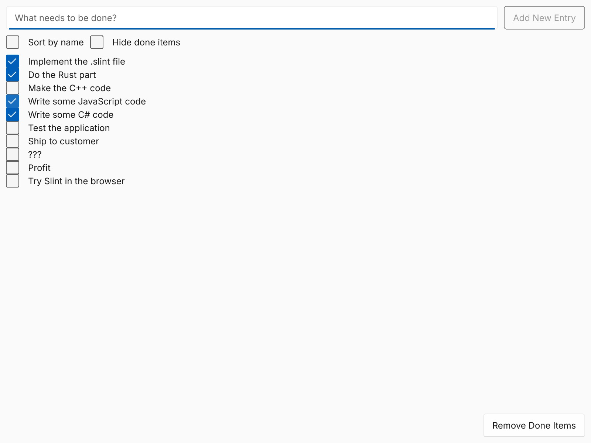
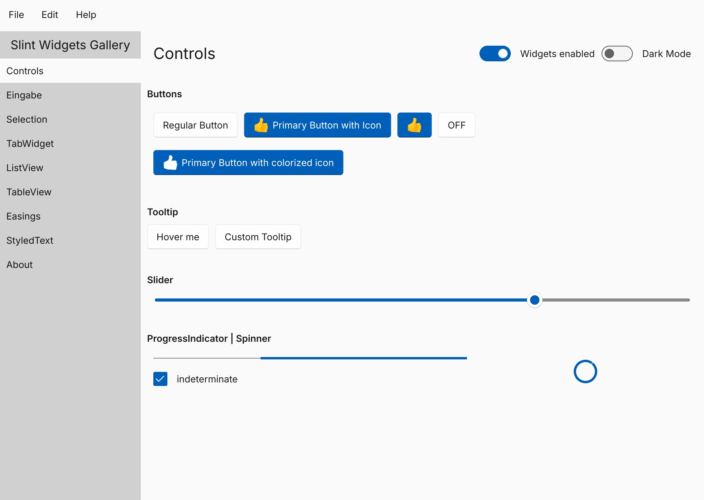
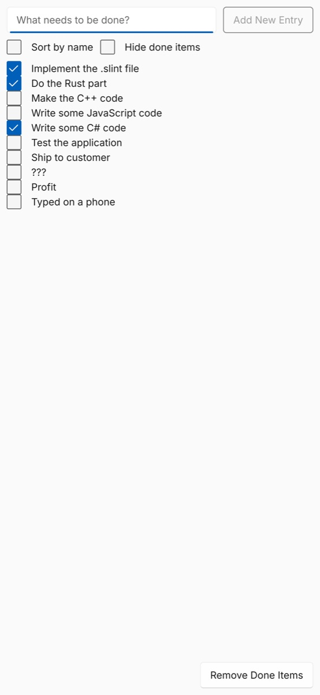
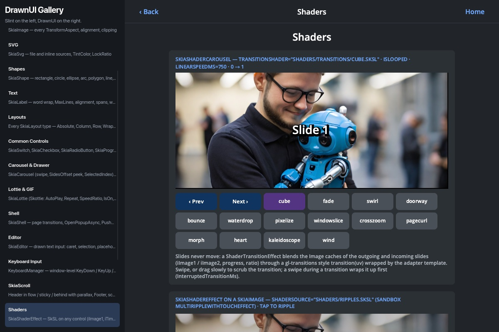
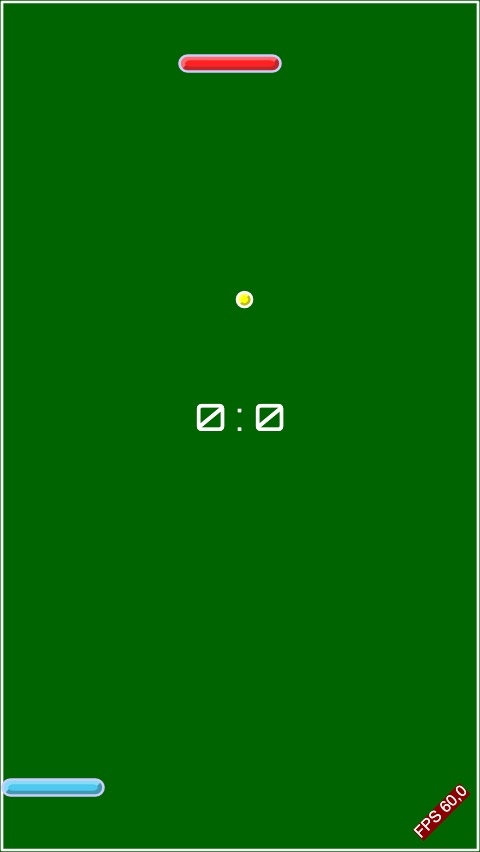

Slint ♥ .NET, Part 2
Disclaimer: short on time, I wrote this article with heavy help from AI. I reviewed it, and the code and claims are checked against the bindings.
Slint for .NET now runs in the browser.
The same .slint files, the same generated C# classes, and the same logic,
on .NET's WebAssembly runtime, drawn into a canvas.
In Part 1, I introduced the community .NET bindings for Slint:
typed C# classes generated from .slint files, hot reload of the UI and the code,
and apps for the desktop, Android, iOS, and embedded Linux, up to preview.10.
This part covers only what's new since then: the browser, a host for DrawnUI's controls, and a few smaller changes.
Hello, Browser
A new template creates a web app:
dotnet workload install wasm-tools
dotnet new install yurkinh.slint.net.Templates
dotnet new slint-web -o MyWebApp
cd MyWebApp
dotnet run
dotnet run serves the app and prints its address.
Open it, and you get the counter from Part 1, with the same .slint file and the same generated AppWindow class.
The only difference in C# is the last line:
Program.cs
internal static class Program
{
private static async Task Main()
{
using var app = AppWindow.Create();
app.OnRequestIncreaseValue(() => app.Counter++);
await app.RunAsync();
}
}The page needs a canvas and two lines to start .NET:
wwwroot/index.html
<canvas id="canvas"></canvas>
<script type="module">
import { dotnet } from "./_framework/dotnet.js";
await dotnet.run();
</script>
Without a size, the canvas takes the window's preferred size.
Give it one in its style attribute, such as width: 100vw; height: 100vh, and the window follows the page instead.
dotnet publish -c Release writes a trimmed build that any static web server can host.
slint-xplat takes web as a platform too, for a web project
that shares ui/ and Shared/ with the desktop, Android, and iOS projects.
dotnet new slint-xplat -o MyApp --platforms desktop --platforms webWhy RunAsync
On the desktop, Run blocks: it runs the event loop until the last window closes.
A browser tab has one thread, and if the code on it never returns, the page freezes.
So in the browser, the event loop runs from the browser's animation frames instead,
and RunAsync returns a task that completes when the loop quits.
An exception in a callback stops the loop and comes out of the await, as it comes out of Run on the desktop.
On the desktop, RunAsync runs like Run and returns a completed task,
so the code that the platforms share can always await it.
Calling Run in the browser throws an exception that says to use RunAsync, instead of freezing the page.
How It Fits Together
.slint files→
slint-compiler -f csharpMSBuild, <SlintFile>→
typed C# classeswith the .slint files and images embedded
wasm32-unknown-emscripten+
.NET's runtimeMono for WebAssembly→
dotnet.native.wasmlinked by .NET's Emscripten
.NET's WebAssembly runtime is built with Emscripten,
and it can link native libraries into itself, which the wasm-tools workload makes possible.
So the Slint library builds for Emscripten as a static library, and the package carries it next to the desktop and mobile ones.
The C# side doesn't change: the same P/Invokes reach Slint, now inside the same .wasm file.
Slint's C++ API already runs in the browser through Emscripten, with a backend that draws into a canvas. Rather than write a second one, I moved that backend into a crate that both C++ and .NET use. It works both ways: what I added for .NET, phones' keyboards, input methods, and the clipboard, C++ apps get too.
The browser has no files for Slint to load, so the build embeds the .slint files,
the images they use, and the bundled translations in the assembly.
Before the first component loads, the library writes them into Emscripten's in-memory file system.


The todo and gallery examples have browser versions that share their C# with the desktop. The gallery picks a bundled translation from the browser's language, and its sidebar shows Eingabe for Input.
Typing Like on the Web
A canvas can't take text: phones show no keyboard for it, and input methods have nowhere to compose.
So while a Slint text input has the focus, a hidden <input> element takes it, placed at the text cursor.
It sets the inputmode that matches the field's input type, so that phones can offer a number pad for a number field.
Phones' keyboards type into it without key events that Slint knows, and the text still reaches Slint.
Input methods compose in it, at the cursor, and Slint shows the composition in the field as you type.
Copy and paste use the browser's own events, so the usual shortcuts and the browser's menu work. Outside those events, a copy from Slint's own context menu goes through the browser's asynchronous clipboard, which the browser may refuse. A paste from that menu gets nothing: a page reads the clipboard only during a paste event.

What Broke on the Way
Three problems took most of the time, and each one was invisible on the desktop.
- Function pointers. Mono on WebAssembly has no way to call a native function that takes a C# function pointer, and aborts at the first one. Ten of the library's 153 imports take one, for callbacks and timers. They now take the pointer as a plain number, behind wrappers with the typed signatures, on every platform.
- A newer Rust than Emscripten. .NET 10 links with Emscripten 3.1.56, which rejects two feature names that today's Rust writes into its WebAssembly objects. The build script removes them from the library's objects.
-
A struct that changed shape. In Emscripten 3.1.56, the WebGL context attributes are
intfields; newer versions usebool, and the backend expected those. The C side wrote past the end of the struct, and regular builds happened to survive it. Only the optimized link of a published app failed to create its WebGL context. The backend now creates the context in JavaScript, which works with any Emscripten version.
Size and Speed
The honest number first: a published app downloads dotnet.native.wasm of 33 MB, or 7.2 MB with Brotli,
which web servers usually apply.
It holds .NET's runtime, Slint's renderers, and Slint's compiler, since the generated code compiles the .slint files at startup.
The C# side is small: the trimmed Slint.wasm assembly is 57 KB.
Nothing has been done about the size yet; precompiling the .slint files would let the compiler stay out.
Once the page has loaded, Slint is quick: Slint draws only when something changes, and in an early test, a full redraw at 1280×800 with the software renderer took about 1.4 ms.
Tested in a Real Browser
CI publishes a trimmed Release build, the kind that breaks most often, and runs it in headless Chrome.
A small Node.js script drives Chrome over its DevTools protocol, with no npm packages,
and follows steps from a JSON file: wait for a line on the console, click, type, compose, copy, paste, and tap.
The test app checks a counter, a timer, await inside a callback, quitting, and an exception that stops the loop,
with both renderers and in a phone's emulation with touch.
The package workflow does the same for an app from the slint-web template, built from the packages it's about to publish.
The steps check what reaches C#, not what's on screen, and screenshots for this article showed what that misses: Japanese text arrives in C# correctly, but Slint has no font to draw it with, see below.
DrawnUI on Slint
DrawnUI is a .NET UI framework that draws everything with SkiaSharp,
with hosts for MAUI, Blazor, OpenTK, and WPF.
I wrote one more host, DrawnUi.Slint: a DrawnUiView element in a .slint file
shows a DrawnUI canvas, and passes it its size, the mouse, the wheel, touch, and the keyboard.
A Slint UI and DrawnUI's controls share one window.
ui/main.slint
import { DrawnUiView } from "drawnui.slint";
export { DrawnUiHost } from "drawnui.slint";
export component MainWindow inherits Window {
DrawnUiView { view-id: 0; }
}Program.cs
using var window = MainWindow.Create();
using var host = SlintCanvasHost.Attach(window.Instance, viewId: 0);
host.Canvas.Content = new SkiaStack
{
Children = new List<SkiaControl> { new SkiaButton("Tap me") { Clicked = (me, args) => window.Title = "Tapped" } },
};
window.Run();By default, the canvas draws into a raster surface that works with any Slint renderer. With Slint's FemtoVG renderer on OpenGL, it can draw on the GPU, on Slint's own OpenGL context. The gallery sample compiles the pages of DrawnUI's OpenTK sample unchanged, next to a Slint sidebar, and DrawnUI's Pong runs in a whole window. The host also runs on Android and iOS, with touch and the phones' keyboards.


It's in the slint branch of my fork,
on its way to DrawnUI as a pull request, so that DrawnUi.Slint ships with DrawnUI's other hosts.
Smaller Things
- The desktop projects of
dotnet new slintandslint-xplatareWinExe, so Windows no longer opens a console window next to the app's window. - The browser runner,
scripts/run_in_chrome.mjs, is in the repository, for testing your own web app the same way.
What It's Not, Yet
The browser support is new, and it has limits:
- One window, which renders into the canvas.
- Slint draws text with the Inter font, which it embeds, and can't use the browser's fonts. Scripts that Inter lacks, such as Japanese, show no glyphs yet.
- Screen readers can't see into the canvas, and the browser doesn't render the text, like Slint's other web apps.
- The download, about 7 MB compressed.
- No live preview in the browser; the desktop project of the same solution has it.
- A path with a space in it doesn't work for the embedded
.slintfiles and images.
And as in Part 1: it's a preview, and a community project. The draft pull request to the Slint repository is still open.
Try It
- Install the workload and the templates:
dotnet workload install wasm-toolsanddotnet new install yurkinh.slint.net.Templates, thendotnet new slint-web. - Read the Web section of the Slint for .NET documentation.
- Run the todo or gallery example in your browser.
- New to the bindings? Start with Part 1.
- Report problems and ideas on GitHub.
This is a personal post. Slint for .NET is a community project, not affiliated with or endorsed by SixtyFPS GmbH, the makers of Slint. Slint is a trademark of SixtyFPS GmbH.